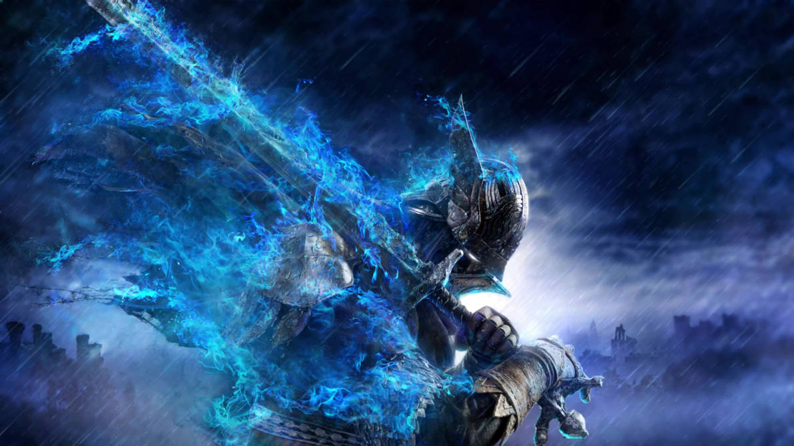

Desde seu lançamento em 2022, *Elden Ring* se mantém como um dos jogos mais aclamados e influentes, com atualizações constantes e uma expansão oficial em desenvolvimento.
O Que Esperar da Expansão “Shadow of the Erdtree”
Confirmada oficialmente pela FromSoftware, a expansão vai adicionar novas áreas, chefes desafiadores e aprofundar a história da icônica Árvore Erdtree, coração do mundo de Elden Ring.
Atualizações Oficiais e Suporte Contínuo
A equipe de desenvolvimento tem liberado patches regulares para corrigir bugs, melhorar o balanceamento e otimizar a experiência para PC e consoles da nova geração.
Modding e Comunidade
Embora os mods tragam novas possibilidades para os jogadores de PC, a FromSoftware mantém o foco em atualizações oficiais para preservar a integridade do multiplayer e da experiência original.
Adaptação para Outras Mídias
Até o momento, não há confirmações oficiais de filmes ou séries baseadas em Elden Ring, embora rumores circulem na comunidade.
Por Que Elden Ring Continua Relevante
Mais do que um jogo, *Elden Ring* se tornou um marco cultural que expande seu legado por meio de conteúdo adicional e uma comunidade apaixonada que mantém o universo vivo.
Conclusão: Um Mundo Vivo que Só Cresce
Com a promessa da expansão “Shadow of the Erdtree” e o contínuo suporte da FromSoftware, *Elden Ring* reafirma seu status como um dos maiores jogos da atualidade, pronto para conquistar ainda mais corações.
